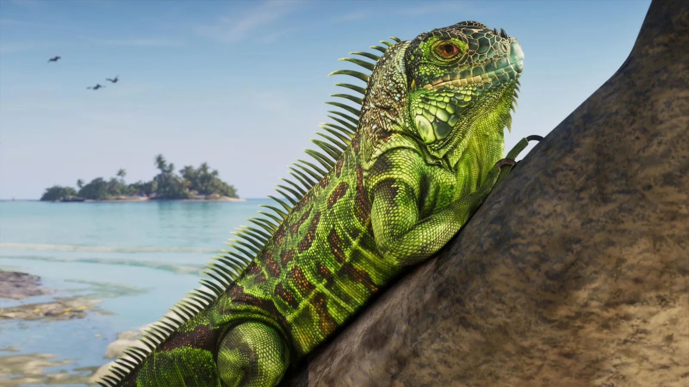

100% в GTA 6: интерактивный чек-лист (35 пунктов)
Опубликовано:

- Для 100% в GTA 6 нужно выполнить 35 пунктов: сюжет и задания — 45%, исследование и занятия — 45%, открытия — 10%.
- Почти нигде не нужно собирать всё: хватит 15 из 18 наборов карточек, 100 из 125 фламинго, 300 из 397 трюков.
- На 100% вместе с сюжетом уйдёт около 100–120 часов (оценка GTABase).
- Отмечайте пункты галочкой — прогресс сохраняется в вашем браузере.
Сюжет и задания (45%)
Исследование и занятия (45%)
Открытия (10%)
Как идти к 100%
- Собирайте по ходу сюжета. Животные в бинокль, машины в WAiNK, фламинго, карточки — всё засчитывается сразу, даже до появления чек-листа.
- Не пропускайте предметы в миссиях. Переигровки нет: деньги в трейлере в Gone Fishing или сигара в Pipework — один шанс.
- Грабьте точки банд целиком. Ценности восстанавливаются медленно; дорогие часы оттуда нужны ещё и для стилей.
- Трюки — с мостов. 202 пролёта под мостами — самый быстрый способ набрать 300 трюков.
- Испытания — в конце. Многие из 80 испытаний закроются сами, пока вы делаете остальное.
Подробно о собираемых предметах — в разделе Коллекционки GTA 6, о карточках — Все 18 наборов карточек. За многие пункты дают и читы — см. Читы GTA 6.
Частые вопросы
Сколько пунктов в 100% GTA 6?
35 пунктов в трёх группах: «Сюжет и задания» (45%), «Исследование и занятия» (45%) и «Открытия» (10%).
Когда открывается чек-лист 100%?
После финала сюжета: Прогресс → Статистика → 100%. Но почти всё, что сделано во время сюжета, засчитывается.
Сколько часов на 100% GTA 6?
Около 100–120 часов вместе с сюжетом — оценка GTABase.
Нужно ли собирать всё?
Нет: во многих пунктах достаточно части — например, 15 из 18 наборов карточек или 100 из 125 фламинго.
Источники: GTABase, «GTA 6 100% Completion Guide & Interactive Checklist», 19.11.2026; PowerPyx, «GTA 6 Collectible Guide – Progress Database», 19.11.2026; Push Square, «GTA 6 Guide: All Guides & Collectibles», 19.11.2026.